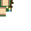
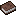

Learn Jutsu
Link players toward clan techniques and rank requirements.
A clean first-time-player path from spawning in to becoming a functional shinobi.

Use this section for the supported Minecraft/Fabric version, required dependencies, recommended settings and multiplayer notes.
Explain the Academy Teacher flow, what the player must complete before becoming a Genin, and which actions do or do not count as regular missions.
| Stage | Goal | Reward / Unlock |
|---|---|---|
| Academy | TODO | TODO |
| Genin | TODO | TODO |
| Team | TODO | TODO |

Link players toward clan techniques and rank requirements.
Explain how missions build character progression.
Point players toward vendors and useful purchases.
Explain recruitment and useful NPC information.